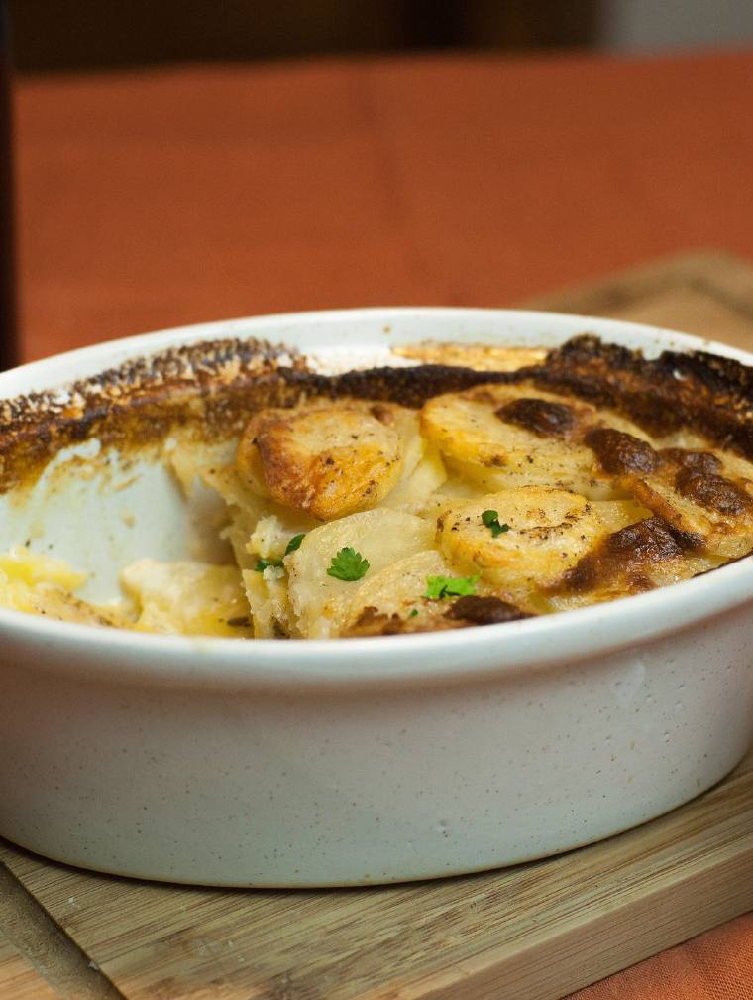

Cuisine française

Cuisine française
Gratin dauphinois
Préparation : 30 min
Cuisson : 1 h
Ingrédients (pour 4 personnes)
- 600 g de pommes de terre fondantes
- 150 ml de crème entière
- 50 ml de lait
- 2 gousses d’ail
- 2 brins de thym
- beurre, sel, poivre
Quantités adaptées. Les temps de cuisson ne sont pas recalculés.
- Préchauffer le four à 180 °C. Frotter le plat d’ail puis de beurre.
- Trancher les pommes de terre très fin, sans les rincer après la coupe.
- Les mêler avec sel, poivre, thym, ail haché, lait et crème, en séparant bien les rondelles.
- Les ranger par couches, verser le reste du liquide, qui doit affleurer.
- Cuire 50 à 60 minutes, jusqu’à ce que la lame traverse sans résistance et que le dessus soit doré.
AstuceNi fromage ni œuf dans le vrai dauphinois.
D’après une recette de chef, Ateliers et Saveurs. Texte reformulé, four converti en °C.